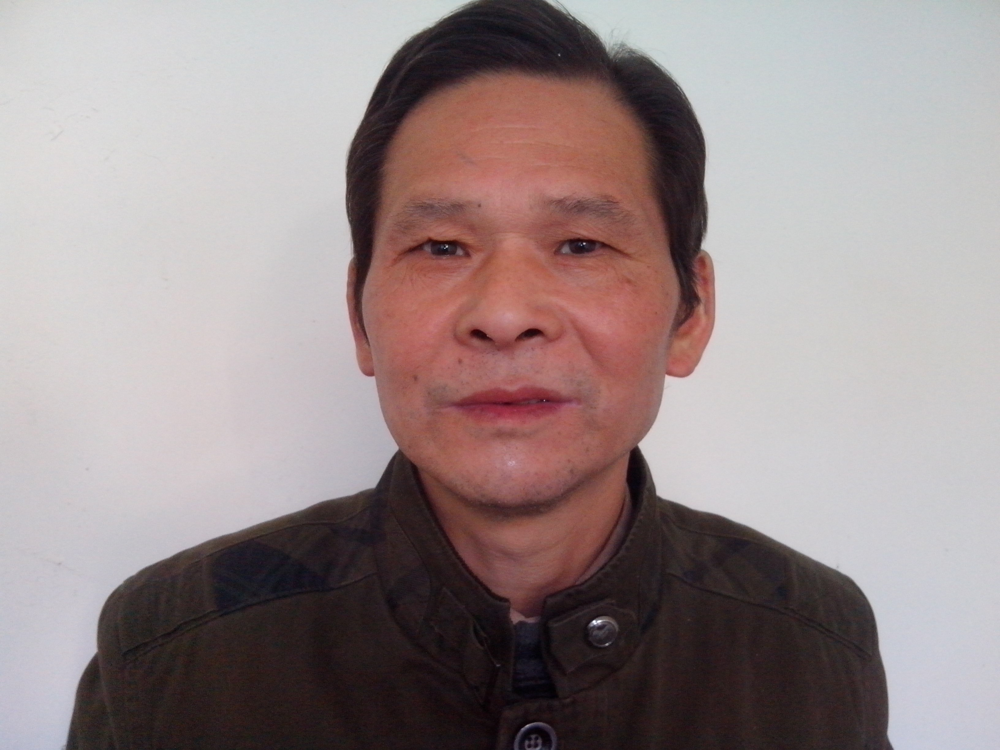

2017.10.19 周四 父亲工伤去世。
为纪念和延续其对学业的一贯支持，现筹备设立学青奖学金。
对亲戚朋友家庭中子女高考升学的，核实情况后，酌情奖励1-2名/年。
以营造尊重知识的良好氛围。
希望未来的管理者们，能更多的在技术和制度上增强底层员工的安全与保障。
尊重生命。提高基层员工待遇。
本奖学金呼吁同学们珍惜时光，好好学习，将来回报社会，回报该基金。
但不做任何强制要求。
“给岁月以文明,给时光以生命。”
To the time to life, rather than to life in time
材料投递
符合条件的考生把两页以内的个人简历（要附带联系方式），
附上准考证、分数证明、录取通知书扫描或拍照后发到邮箱申请。
wangjl at biomooc dot com
at 替换成 @
dot 替换成 .
我们收到后会统一回复，请在标题注明 20xx学青奖学金申请+自己的名字。
筛选标准
总数是1-2名/年，金额每年待定，一般是重点大学一年的学费。
如果出现争议，按照如下条件筛选：
1.优先考虑在河南本省参加高考的考生，当年没有时，再考虑外省；
2.亲戚和朋友当年都有考生考上时，各奖励一个名额，总价额不变，按人数均分；
3.拿到录取通知书后，本省考生按照学校排名第一、考分第二进行筛选；
4.评选范围依次是：亲戚和十一矿运输二队和机安对（队工会的证明）、沈庄村（考生身份证和户口本为准）；
第一梯队没有时，从第二梯队筛选，如果还没有，则当年不奖励。
5.文理科不方便比较时，文理各评选一名；
6.需要考生本人亲自领取，带本人身份证、户口本、准考证、分数证明、录取通知书、银行卡。
现场拍照留念，签字收款。地点以当年公布消息为准。
备注：根据支付能力确定本基金的延续性，以当年高考后一个月公布的最新消息为准。
截止到8月10号。未申请或者不能到现场领取的视为主动放弃。当年名额作废。
2019.3.21 at 南科大靳文菲实验室，2nd Year of PhD.
#努力
今天江苏化工厂爆炸，波及到2公里外的幼儿园，多人肯定当场死亡。相对于体力劳动，智力劳动普遍肉身安全更有保障。
"我不怕你去的远，怕你去不了那么远。别管我，能出去就尽量出去。"，father.
现在是最好的时刻，我要珍惜时间，有所作为。
目前对我来说，学术是最佳出路，要多发文章，先别管文章质量。
2019.4.12
#道路
视觉中国 被团中央点名批评，很多公司响应。看来“天下苦秦久矣”。
这个世界上永远有easy way和right way。选择后者。
因为夜路走多了会碰到鬼的。视觉中国选择了easy way，在今天，这条路终于走到了尽头，无路可走了。
相信越努力越幸运。没有背景，就更应该严格律己，不留下任何把柄。
牢记，人间正道是沧桑。

Copyright © 2017-2018 Xue Qing Science and Technologies Foundation. All rights reserved.
Github